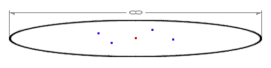
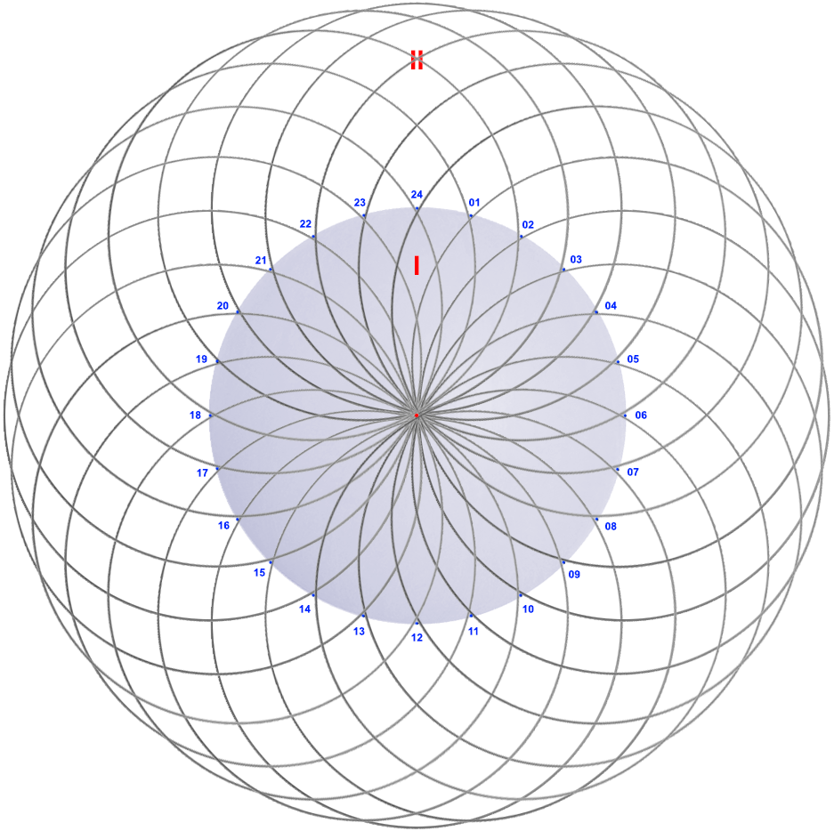

полный текст книги:
Ничто и Точка (предисловие)
Цель
Созерцаемое
Сущность
Сознание
Двухаспектная Сущность
Четвертое измерение и ...
Общество и Человечество
Пятое измерение и ...
Первовозникновение
Акт "Я"
Процесс изучения Акта "Я"
Смысл Бытия
Развитие Сущности
Коллективная реальность
Система развития Сущности
Эхо (отражение)
Реальный аспект Глоб. "Я"
О мировоззрении
Пространство-время
Осношение к Себе
Отношение к своему телу
Лень
Страх
Надежда (Ожидание Чуда)
Адаптация
Тождество личности
Отношение [Рассудок|Тело]
Свобода Воли
Трудная проблема Сознания
Неразличимость и идентичн.
Материя
Гносеология
Эпистемология
Разделение
на главную страницу сайта
— глава девятая —
————————————————————————————
————————————————————————————
ПЯТОЕ ИЗМЕРЕНИЕ, ПЯТИМЕРНОСТЬ
Мы, все вместе, находясь в одной комнате, рассуждаем и исследуем – в целях ответить на интересующие вопросы: Что Есть «Я»? Как устроен Мир? и, В чем смысл жизни? Каждый из нас, со своей позиции, изучает структуру «Я» (равно и Мира в целом). На первых этапах мы разбирали устройство механизма созерцания, и многое, связанное с Сознанием, Реальностью, и Дуалистичной Сущностью;
* * *
Попробуем применить четырехмерность в дальнейших исследованиях для доказания Синхронной Реализации Единой Реальности, каждым из участников ситуации. До сих пор доказать Присутствие созерцаемых нами людей не представлялось возможным. Здесь подразумевается то, что мы их только видим, и не более. Мы можем полагать, что они видят нас, но именно и как-бы «в свою очередь», но опять же понятно что это не есть факт, либо не может осуществляться одновременно, но это тоже – недоказуемо никаким способом. Другими словами – проблема есть, она существует и относится к любым видимым объектам, в том смысле – существуют ли другие люди? или, все это не более чем несущественный театр и иллюзорная фикция?
Позиция «Я», красная точка в центре пространства – пока останется свободна. Теперь оглянемся вокруг и допустим, что каждый из нас на своем месте, видит со своей позиции всех, кто находится в данной аудитории (см. рис. 10). Для каждого участника, и Он Сам, и мы вместе, находимся в одной ситуации, то есть решили исследовать пространство с текущей реализацией – предположив его синхронным, общим, одновременным, пусть с учетом разных позиций:

рис. 10
(общее пространство с учетом разных позиций)
Обратите внимание на то, что мы рассматриваем явное и реальное пространство, и ситуацию для всех участников, которых четверо, и четыре точки (исключая центральную точку). Известно что момент реальности не имеет никакой протяженности, для каждого этот момент подразумевается своим собственным. Тогда, придется признать, что если каждое из четырех «Я» – Есть отдельная самостоятельно действующая Сущность, то синхронизация Их моментов реализации абсолютно невозможна, это также верно и по причине полной изоляции реальности каждого участника;
О моменте реализации реальности, мы говорим рассуждая последовательно, то есть – не уделяем должного внимания непрерывно текущим данным. Необходимо устранить этот недочет, закрепив статичное условие любых рассуждений – данные являются потенциальным опытом, который не поступает прерывисто, но постоянно течет внутрь «Я», беспрерывно заливая внутреннее пространство как будто снаружи, из «Сознания» через Рассудок. Изучая механизм созерцания мы подразумевали это 'неким обработчиком', представляя, что мы, вместе с телом и текущей ситуацией, через глаза, либо посредством данных поступающих через иные механизмы восприятия (осязания, слуха, обоняния) - постоянно погружаемся, словно летим внутрь своего «Я» оставляя ситуацию и то, прошлое пространство снаружи – извлекая при этом опыт и сохраняя статичную волну этой ситуации в памяти, со всеми поступающими данными об «объектах» с условиями изменений и их общей динамики;
Обратите внимание на рисунок 11. Уровень ‘0’ (верхний). Красные линии со стрелками снаружи – входящие данные заполняющие пространство извне. Эти данные поступают как результат обработки (о чем нам известно). Объекты- т.е. данные, интерпретируются, и затем квалифицируются когда мы уже созерцаем Ситуацию, которая, в результате анализа может оказаться новым опытом – зеленые стрелки внутрь «Я», опыт и входные данные поступают внутрь, через ‘привычно называемые глаза’. Следующий уровень реальности (-1), после погружения внутрь «Я» происходит тоже самое – красные линии – это данные поступающие извне, затем –> изменившаяся посредством нового опыта ситуация, и снова –> новый опыт, зеленые стрелки внутрь.

рис. 11
(потоки данных)
И далее, уровень (-2), и снова тоже самое. Процесс полета внутрь вместе со своим телом, участниками и ситуацией, включая Вселенную, не прекращается …в течении жизни; Следует уточнить важную особенность с прерываниями данных: 1). В момент моргания глаз, и 2). Во время сна;
1). В момент моргания глаз, и
2). Во время сна;
Если согласиться с Солипсической моделью Мира, период прерывания при моргании глазами – приходится признать неизвестным по протяженности временным промежутком. Как на счет, 5 млн. лет между морганиями? – ведь по идее, величина этой протяженности не имеет особого значения, если это совсем незаметно; И напротив, при Коллективной Синхронной Реализации реальности – все оказывается как обычно (привычно), то есть ‘на своих местах’, по причине синхронизации ситуации нескольких «Я», тогда моргание останется, как принято, коротким промежутком ‘времени’, однако, это лишь влияние Коллективной признательности ‘промежутка времени’, по факту этой протяженности нет;
Далее, позволим себе предполагать недоказанное на этот момент, но кажущееся логичным, и имеющее очень веские основания, о которых нам еще предстоит рассуждать;
Во время сна всё странно. Реализация явно прекращается, казалось бы добровольно и намеренно, но на самом деле – по причине невозможности созерцания и понимания, из-за конфликта мерности и способности рассудка, то есть его параметров. Допустим, «Я» участвует «где-то» в реальных событиях в условиях сорока-мерности (40-е измерение ) – мы не способны, и не готовы это видеть и понимать что происходит. Когда мы видим сны, в них наша активность всегда соответствует привычной трехмерности. В другие разы, когда мы их не видим, это не означает что снов нет, просто – мерность не соответствует возможностям, то есть уровню развития (развития нашего рассудка). Кстати, если это принять как факт, то это еще одно подтверждение, что «Сознание» и «Рассудок», это совсем разные «вещи». Мы считаем, что любая живая «Сущность» (речь о моем «Я», но с позиции каждого) живет ‘потенциально бесконечное’ число жизней каждой конкретной личности одновременно – поэтому мы всего лишь уверены что спим третью часть своей жизни. Здесь следует учитывать, что времени, как-такового, в принципе не существует, т.е. протяженность процессов является чувственным феноменом, который обеспечивается посредством ‘чтения’ данных волновой природы. Каждая точка волны, при этом, соответствует определенному условию-состоянию каждого конкретного объекта. Чувство протяженности, в других, более высоких пространственных мерностях, может иметь совершенно иной смысл, это подобно тому, как Условно бесконечное трехмерное пространство может умещаться в одной абстрактной точке четырехмерного. То есть, по нашему мнению, день, ночь, сон…– являются системными фазами, означающими начало и конец бытия «Я», в ‘одной из Его’ реальностей конкретной личности. Здесь, мы полагаем о «Собственном Я», однако, можем доказать лишь «Суть Самоидентификации» и именно определенный Путь, как уникальный опыт, Рассудок и личные способности (‘Ум’), позволяющие «Я» признавать «Себя» отдельным «Собой» (с позиции каждого), т.е. одним из бесконечного числа тех (меня, или Вас), кем «Это Я» может быть, и Есть, в любой из моментов, также и во время сна. Но, если «Я», во время сна проявляет активность, действуя в чужом, постороннем теле, тогда ‘опыт приводящий к смерти’ абсолютно точно окажется ‘окончательным тупиком’ – никем и никогда не востребован, и буквально ‘забыт навсегда’. Да, неужели? Всё настолько жестко? С материалистической позиции все именно так. Мы уже знаем, что Мир устроен иначе. Глядя на структуру – Размах, Гигантизм, Бесконечность, и, лишь этот Единственный Шанс? – это абсолютно невозможно;
Нам ли огорчаться?, но и расслабляться не следует. Есть очень интересная зацепка – мы видим «сны», это говорит о том, что «Я», хоть и является бесконечно малой частью «Глобального аспекта Сущности», но в реальности – Это Личное, отдельное, самостоятельное, «Собственное Я», и в период сна (без сновидения) покидает наш рассудок, по причине несоответствия неким специфическим условиям, или, возможно по причине многомерности параллельной реальности, либо совсем иным, непонятным для нас более сложным условиям. Радует что иногда мы все же видим сны. Это значит, «Я» имеет(-ю) несколько параллельных линий опыта одновременно, – не могу же «Я» сославшись на шуточную импровизацию <моего мозга>, уничтожая при этом 30% жизни (отключаться на 8 часов в сутки) – это треть жизни не несущей в себе функции приобретения нового опыта – этого не может быть (!), учитывая высшую степень гарантий и рационализма, с которой все в Мире устроено. То есть, мы утверждаем что «Я» одновременно приобретает опыт потенциально бесконечного числа <Я> аспектов конкретной личности. Вы спросите: –Почему же конкретной личности? –Потому что в каждом сне «Я» узнаю именно Себя, пусть в каких-то странных ситуациях, которые со мной никогда не происходили, но, «Я» именно знаю, что Во сне «Я» использую известный мне опыт, приобретенный мною лично, в этом Мире, а не где-то в другом месте, но использую там, где «Я» прежде никогда не был. Или, можно допустить что рациональный, ценный и необходимый для развития Сущности опыт, извлекается всеми существующими вариантами конкретной (моей, или вашей) личности, но вскоре становится доступен для всех аспектов этой личности, вероятно посредством разных, но аналогичных ситуаций, где этот опыт необходим и может использоваться (и становится доступен). Если же, и в этот раз предположить, что «Я», во время сна одного аспекта управля(-ю/-ет) другой личностью (и ‘чужим телом’), то периодически мы видели бы сны будучи «Не Собой», но такого никогда не случалось, и надеемся не случится. Т.е., со снами все не так туманно, как прежде показалось. Вы можете не соглашаться с нашими рассуждениями, что разумеется. Каждый сам выбирает опыт, который считает рациональным, но и этот сохранится :) (коль Вы читаете);
Очень часто предположение нужной Идеи, в ее готовом развернутом виде, приводит к правильному решению в обратном порядке – от готового результата к мыслям, необходимым для Её изначального поиска классическим методом, но – прежде они были недоступны. То есть – проще найти точно определенное и необходимое, чем неопределенное и непонятное. Есть противоположный принцип - ’всего больше у человека того, чего ему не надо’ однако, анализ задачи – приводит к методу ее решения;
Кстати, на счет моргания – за тот миг когда глаза закрыты, Сущность может прожить целую чужую жизнь (вероятно многократно более долгую чем 100 лет) в параллельной ветке опыта, в пространстве более высокой мерности, или в иной неизвестной нам <структуре реальности>, что тоже вполне возможно. Причем, на счет моргания, определенно ничего утвердительно не сказать, т.к. за этот промежуток времени мы не успеваем увидеть сон, и не успеваем что-либо представить. –Что в этот период может происходить? – абсолютно не известно. Скажем так: –Мы не способны адекватно представить возможности, которыми Сущность располагает – это не постижимо, в чем мы видим большой плюс и это открывает направление Вечного исследования. Есть и другие, интересные, но – это надежнее тех, прочих;
Если двумерное существо, каким-то волшебным образом посмотрит «наверх», то окажется в шоке от жирафа, который на плоскости – представляет собой «четыре пятна от копыт». Но, большего восторга, нам следует ожидать от понимания и осознания четырехмерности;
Суть устройства четырехмерности, вряд ли существует независимо, в таком случае «Я» использовало бы это, как готовую подходящую структуру. Но, четырехмерность, пятимерность, и далее, Любые мерности реализуются по необходимости, для живой Сущности, то есть по Воле намерения и при наличии основания, которое, но в свою очередь, возникает по Закону Гармонии, для поддержания, широко известного ‘Баланса Противоположностей’. Многих «вещей» мы представить не способны. Сколько нам надо тысячелетий для осознания тридцатимерности? Важно не останавливаться на достигнутом, но заразиться интересом и проявляя намерение стремиться к чему-либо полезному, следуя тем Путем, который оказался лучшим;
Вспомним и уточним, о многокомпонентной, насыщенной объектами динамичной реальности, которую мы называем «ситуация», часто подразумевая – как пустой бесполезный событийный фон, не несущий никакого опыта. Но, мы уже знаем, что лишенных смысла событий не бывает. Если это учитывать, то любая ситуация – есть потенциальный опыт и не важно, смогли мы его извлечь или не смогли. То есть, никаких прерываний, которые мы используем для лучшего понимания, не происходит, и данные, именно текущие – преобразовываясь заполняют пространство (из физики, и согласно Идее потока, следует, что пространство всегда заполнено). Мы совсем недавно рассуждали (страница 59) о том факте, что созерцательная реализация прерывается морганием глаз, и полностью прекращается периодами сна, т.е., поэтому ступенчатая картина четырехмерности Unicus, как мы ее изображаем (страница 49), оказалась не нарушена, то есть соответствует и выглядит именно так, как необходимо. Однако, метод построения данной схемы, прежде и вовсе не предполагал прерывания, и намеренные прекращения реализации реальности (скажем: к счастью, так случайно получилось). Далее, в наших исследованиях будем учитывать именно постоянный поток, что наиболее правильно, однако, это доступно только при возможности избежать метод последовательного рассуждения, который, как нам уже известно – навязан ограничениями рассудка;
Итак: Мы прежде уже условились изучить синхронную реализацию Коллективной реальности с позиции каждого участника, это принципиально очень важно – потому что мы созерцаем, живем и творим, осознавая «Себя» важной частью Человечества, Общества, и Социальных условий;
Если реальность каждого существа изолирована, тогда мы утверждаем, что отдельные «Я» не могут реализовать друг друга одномоментно и синхронно участвовать в событиях, учитывая что реальность, есть лишь абстрактная граница, не имеющая протяженности, тогда – синхронизация точки конкретного состояния, невозможна при данных условиях. Однако, она не возможна и при «текущей реализации», то есть при поточном поступлении данных. Мы прежде уже сталкивались с такой проблемой – это причина ущербного представления Структуры Устройства Мира, но не только в связи с отдельной, изолированной реальностью каждого «Я», но и по причине недостающего для исследования, и полноценных рассуждений – пятого пространственного измерения. Доказывается это утверждение очень просто и скоро всё станет понятно. Предлагаем выяснить условия, которые необходимы для осуществления «Коллективной Синхронной Реализации Реальности», как метода вообще. Далее, мы можем выбрать один из двух вариантов модели (если иначе, то необходимо доказать, что они одинаковы):
1. «Мир – это Я». Когда есть только «Я» + «Его Сознание» + «Его Опыт», и ничего более. Все остальное, не иначе как прочее – является эфемерной иллюзией, т.е. содержимым контентом, второстепенным, включая абсолютно всё, как мыслимое, так и немыслимое; Согласно такой установке, фактическое существование, других независимых «Я», а также их опыта, чувств и эмоций – доказать абсолютно невозможно (но, если именно так, то некому доказывать);
2. «Мир – это «Я»», то есть одно-на-всех «Единое Я», как «Глобальный аспект Сущности», Целое – представленное потенциально бесконечным числом отдельных «Реальных аспектов Я», каждый из которых извлекает – собственный, субъективный и уникальный опыт, как бесценный вклад в общее Благое дело «Развития Сущности». И, Благое здесь, именно по причине отношения к «Сути Общего», то есть вклад в безопасность «Гарантии Вечного Бытия и Жизни»;
Обратим внимание – в первом случае (1.) мы столкнулись с устойчивой и жесткой Солипсической моделью, однако, на этот раз, не станем придавать этому особого значения, так как сейчас мы имеем возможность заглянуть в «Суть» гораздо глубже, чем прежде, и речь не только о четвертом измерении, а также и о Дуализме Сущности. Предполагая такую модель в исследовании, прежде мы соглашались с тем, что существует лишь Одна четырехмерность и Один опыт. При этом, как оказалось позже, присутствующие участники ситуации реализовывались, и действовали как иллюзорные фантомы – доказать «Их Живое Состояние» было невозможно, и мы были вынуждены это признавать (хотя нас это морально не устраивало и хотелось иначе);
Теперь мы знаем, что не ограничены трехмерностью, но и это пока не отменяет Солипсическую модель устройства. Известно, что можно исследовать пользуясь известными методами (но, законы можно менять если есть основания). Если, используя четырехмерность – мы способны глубже вникнуть в «Природу Единственного ‘Я’», то логично, что ‘пятимерность’ поможет обосновать и доказать большее – «Коллективную Синхронную Реализацию Реальности», как Идею недоступную прежде, по известным причинам;
Закономерность Системы мерностей (стр. 45), доказывает правильность вывода, так как, Если пятимерность – есть бесконечное число четырехмерностей, при их логичной организации в четкой структуре - с параллельными осями, а четырехмерность, при этом, отражает структуру одного «Реального аспекта Сущности», то пятимерная структура – соответствует бесконечному числу Реальных аспектов», и доказывает «Коллективную Синхронную Реализацию Реальности». Это далеко не всё, что последует в качестве вывода. Будем детально разбираться в данной структуре;
То есть, второй вариант более рационален, он более гибок и особенно-лоялен, но имеет необычную конструктивную особенность – Общее «Единое Я». Эту конструкцию нам необходимо обсудить в целях проверки, т.к. «Сущность» Совершенна, не имеет фундаментальных ошибок в Своем Устройстве, иначе Мира бы не существовало (судя по его реальной сложности). С другой стороны, мы понимаем что – ‘«Сущность» не имеет никаких ограничений’.
Мы выяснили, что «Я» (следуя логике данных моделей), является Причиной Всего, в полном смысле. Если это так, то имеем «Один Аспект», и именно «Глобальный аспект Сущности». В таком случае, подразумевается внутреннее «Сознание», где «Я», как известно и ощутимо на практике (оглянитесь вокруг) – всегда реализует Себя в центре, как «Реальный аспект Я», который, в Солипсической модели Мира утверждает, что: «Есть только Я». Следовательно, «Единое Я», как «одно-на-всех» (2), так и Солипсическая модель (1) – Суть одно и тоже, и от любых парадоксов в популярной философии, в особенности от противоречий, как в предыдущих примерах, ровным счетом – ничего не зависит. То есть, мы утверждаем, что людское признание устройства Мира «Солипсической моделью» – не изменит Истинной структуры устройства Мира, или «Сущности»;
То есть, «Единственное Я, оказавшееся Глобальным», о чем именно утверждается, когда говорится «Есть лишь Я, и ничего более» – требует необходимой относительности к «Сознанию», в Глобальном смысле, и кроме этого, при условии реальности в «Пространстве», которое возникает естественно по причине Присутствия «Сущности», нужен Баланс Гармонии: «Реальный аспект Глобального Я» (или, всё теряет логический смысл) – что повлечет определение бесконечного числа «Не Я», либо, отрицание означало бы противоречие Собственному Бытию, но это уже абсурдно;
Остается подтвердить: Следуя выбранным методом, мы прежде определили конечный результат, как структуру к которой хотели прийти, и инструмент – Пятимерность, в качестве основы этой структуры и, в результате, получили необходимое решение. Предлагаем попытаться изобразить пятимерность, надеемся у нас получится. Визуализация, в нашем случае – это геометрическая модель, т.е. наглядная схема, которая очень важна для понимания, и как принцип построения мерностей, и очень необходима в перспективе реорганизации и развития рассудка [ развитие = жизнь ];
Предлагаю позволить нам еще немного преждевременных постулатов (это не плохо), так как скоро будем обсуждать эту тему довольно подробно. По правде сказать, без этого сложно что-либо представить, однако относиться к этому, мы просим (по возможности>, как и следует, с вниманием.
«Единое Я» эквивалентно «Глобальный аспект Я» равно и «Глобальный аспект Сущности», по аналогии: «Реальный аспект Я» = «Реальный аспект Сущности» – это Есть «Искра Жизни», «Оживляющее Я» то есть «Читающее Личность» содержащуюся в статичной волне опыта каждого живого существа ( – в условиях Реальности );
Итак, представим Пятимерность: Смотрите на рисунок 12. «Глобальный аспект Сущности» это красная точка внизу схемы «на» запредельном уровне -∞-1 представленный потенциально бесконечным числом «Реальных аспектов ‘Я’» но посредством индивидуальных линий опыта. Упрощая этот пример мы изобразили только два Уникус, и общее «Сознание» – здесь это запредельный уровень ∞+1. Каждый из «Реальных аспектов Сущности» имеет собственный четырехмерный «Уникус» (Unicus) т.е. использует и извлекает свой субъективный и уникальный опыт. Прерывистая красная линия – это Относительность «Глобального аспекта Сущности» к «Сознанию» – это и волна опыта (момент синхронизации общей реальности):

рис. 12
При такой концепции Мира, осуществляется синхронная реализация реальности любым числом живых участников ситуации. Сложно, но разберетесь. Сначала представьте конструкцию пятимерности («Генералис»). Сравните эти ситуации: с двумя участниками на рис.12, и четырьмя на рис. 13. Имейте ввиду потенциально бесконечное число осей (Unicus) в структуре пятимерности. Разумеется, Вы понимаете невозможность изобразить картину в целом.
Пятимерность (‘Generalis’) – потенциально содержит бесконечное число параллельно ориентированных четырехмерностей (‘Unicus’).
«Сущность» инициирует и использует такую структуру, создавая, соответствующие и необходимые для развития условия. С этого момента у вас появилась возможность предполагать и строить структуры измерений более высокого порядка. До этого, Вы были не в состоянии их представлять (шестое, седьмое, восьмое... измерения). При наличии опыта построения четырех- и пяти- мерностей, подобная задача уже никого не испугает и решение окажется возможным. Уровень «0», на котором осуществляется «Коллективная синхронная реализация реальности» (рис.12), требует от нас особого внимания и изучения, поэтому будем обсуждать его далее, в процессе подробного разбора пятимерности (пятого измерения), и чрезвычайно абстрактной геометрии данной структуры;
Схема на рис. 12, (с соответствующими комментариями), позволяет нам иметь представление о пятимерности, и осознать ее посредством причины, по которой она имеет именно такую структуру. Мы не считаем это тривиальным и доступным для каждого (как и четырехмерность), хотя и уверены, что есть желающие познать и провести полную (тотальную) реорганизацию рассудка – которые найдут в себе силы и способности для понимания. Но есть и другие способы применения данных исследований. Мы оставим читателям возможность импровизации, дабы не сбивать их со «Своего Пути» пустыми домыслами :), ибо любая ‘чужая Идея’ бывает заразна в высшей степени, нарушает бытующие тысячелетиями (-у|-за)стоявшиеся порядки – занимая их место, по причине живучести иного порядка; Мерности связаны со способностью рассудка осознавать реализацию реальности как основание для пространства с соответствующей <этому> абстрактной структурой. Любая мерность, при наличии необходимого уровня такой способности – реализуется в пространстве как Система для расположения самого основания. Если же рассудок не имеет необходимых свойств для реализации требуемого пространства, то Суть такого уровня трансцендентна;
пятимерность – это тоже образный шар

рис. 13
Советов не много, но один крайне важный – удерживайте мысль о том, что пятимерность состоит из бесконечного числа четырехмерностей, однако, прежде Вам необходимо разобраться и хорошо осознать четырехмерность. Не надо спешить, смотрите на рис.8, читайте данное исследование, пытайтесь понять, либо – мы не рекомендуем погружаться в эту тему, чтобы сохранить ‘Здравый Рассудок’. В любом случае, если Вы сделаете шаг в Бездну, то это происходит по вашей собственной воле и инициативе, т.е. абсолютно добровольно. Если же не намерены отступать, пытайтесь расслабиться и отвлечься, затем снова попробуйте, но не переусердствуйте. Мы Вас предупредили, что это опасно. Можем лишь искренне пожелать удачи в деле постижения -четырех и -пятимерного пространства (отдыхайте чаще);
Реализация реальности при такой структуре (внимательно см. рис. 11), осуществляется посредством преобразования совмещенного т.е. объективного опыта и совмещенных объективных условий на уровне «0». Следует отметить, что новый извлеченный каждым «Реальным аспектом Я» опыт, выше уровня «0», будет отдельным, уникальным и субъективным, как и поступающий для совмещения, т.е. с уровня «0» и ниже, также – уникален и субъективен. Нам известно, что приобретенный ‘новый опыт’, становится сырьем для следующей реализации. Следует учитывать цикличность и, так называемую «текучесть», о которой мы говорили прежде – это крайне важно для понимания. Важно понимать то, что уровень «0» лишь обозначен как общий, однако для каждого «Я» он изолирован. Уровень «0» необходимо понимать «псевдо общим» и по причине, и для, полной синхронизации Ситуации, на всех уровнях «0» каждого участника. Это делает Ситуацию идентичной в каждом из них, а участие непосредственным, прямым и фактическим. Синхронизация реальности, как мы видим, абсолютного качества – точно соответствует определению «Коллективная Синхронная Реализация Реальности», что обеспечивается посредством «Единого Сознания». По этому поводу надо сказать, что для доступа к «Системе» не требуется время. Это везде, вернее – Это Есть Всё. Т.е. многомерность, и размеры Мира, которые мы реализуем в условиях реальности по причине нашей природы – имеют смысл только для нас, и прочих ‘существ использующих трехмерное пространство’. Для «Глобального аспекта Сущности», и для «Сознания», препятствий нет – время и расстояние не имеет смысла. Если так станет понятнее, мы бы применили определение свойства «Вездесущее», но и это не совсем правильно, потому что «Сознание» не имеет собственной Воли <и не активно>. Это ‘пассивная часть’ в фундаментальном отношении [ «Я» | «Сознание» ];
Первый Источник Данных – это инициатор, он же первый свидетель новой ситуации. Данное определение не совсем корректно, потому что одна (любая) ситуация, является продолжением другой, это подтверждается и технически, по причине ‘потока данных, опыта и условий, в процессе реализации реальности’, об этом см. стр. 61 (рис. 11).
Данные синхронизации мгновенно распределяются между всеми участниками ситуации, т.е. информация доступна везде и всем участникам одновременно. Процессуальность и последовательность, в обороте данных отсутствует, и не требует времени. Временная протяженность реализуется и ощущается существами способными извлекать опыт. Для развития, посредством анализа и извлечения опыта, всегда необходим процесс. Инициатор ситуации, а значит ‘он же активатор распределения данных’ – является причиной синхронизации данных для всех участников. «Сознание» производит реализацию ситуации в пространстве каждого участника, а также обеспечивает все операции с данными. Ситуация, для каждого участника, происходит в условиях полной изоляции, в его собственном, т.е. индивидуальном пространстве, но полностью синхронизирована со всеми существами кто способен её созерцать, и принимать в ней участие, включая все живое (люди, лошади, птицы, мухи, ...);
Рассмотрим очень интересную деталь. Это связано с «Коллективной синхронной реальностью» – усреднение опыта, то есть совмещение. Нам известно, что состояние каждого объекта изменяется постоянно, преобразуясь в его новое состояние. Цикличность осуществляется через общее «Сознание» сохраняющее технически объективную ‘картину’ – условия и динамику изменений, но не опыт. Точка внимания, каждого «Реального аспекта Я» читает волну изменения объекта. Каждый аспект считывает её со своими условиями, и с учетом индивидуальной позиции конкретного «Я» в пространстве. Для обеспечения полной синхронизации, «Сознанию» необходимо иметь нечто среднее, то есть усредненное, назовем это «объективный опыт». Совмещение динамично и имеет переломные моменты, приведем к примеру самую простую ситуацию:
Группа туристов путешествует в джунглях. У них есть опытный проводник, однако, трое туристов отбиваются от группы и становятся случайными свидетелями схватки мангуста с королевской коброй. Кажется у маленького, но отважного зверька, немного шансов одолеть смертельно ядовитую змею. Совмещенный опыт европейцев (до сих пор не знавших об особых навыках мангуста), в такой ситуации мешает ему победить, как вдруг из-за кустов выходит их опытный проводник, – Он знает, что у кобры практически нет шансов против маленького мангуста. Совмещенный опыт сразу меняется в пользу зверька, и – дает ему возможность одержать быструю победу. Здесь есть некоторые тонкости в процессе совмещения, но в общем система работает таким образом, с учетом шансов, которые у кобры тоже имелись, но их было меньше чем у быстрого хитрого мангуста (фактор проводника). вывод:
При совмещении опыта, преобладание склоняется на сторону более веских оснований. Варианты в условиях сохраняются, но негативное действие этого фактора не отражается на эффектах преобладающего влияния;
Надо учитывать не только вероятность, с которой мангуст мог потерпеть поражение, в связи с шансами на промах, либо неудачный уворот от укуса кобры. Его проигрыш также имел увеличенные шансы, по сравнению с обычной ситуацией, по причине предвзятого отношения туристов – они предполагали победу кобры и опасались за жизнь мангуста – создавая негативный фон, препятствующий успеху зверька. Будьте осторожны с любыми эмоциями - никакие шансы (или вероятности) не имеют малейшего значения. Только знание и опыт являются решающими;
* * *
Метод поворота – это пригодится :) для представления проекции 4D и 5D – если посмотреть с торца, сверху.

рис. 14
(шар – структура Уникус – вид схемы сверху)
Если мы посмотрим на схему четырехмерности с торца, сверху, то увидим круг с точкой в центре. Радиус круга бесконечен, поэтому это абстрактное представление. Но, понимая структуру, мы знаем, что ‘это образный шар’;
Становится очевидным, что “Мерность любой степени умещается в структуру абстрактного бесконечного шара”, т.е. бесконечного пространства, реализуемого под конкретные нужды «Я», но мы имеем разные способности – некоторым людям сложно представлять более высокие мерности (но возможно научиться). Это означает наличие существ которые могут видеть то, что другим недоступно. Вывод: Мерность пространства – это метод реализации реальности, соответствующий параметрам рассудка;
Предлагаем представить Пятимерность в форме шара:
В четырехмерности только центральная точка стремится, или уходит внутрь Себя, то в пятимерности, каждая точка является осью отдельного Уникус, и также уходит внутрь Себя. Однако, это не все что надо знать для представления четырех- / пяти- мерности. Еще раз обратите внимание на метод поворота структуры четырехмерности (рис 14);
Если четырехмерность, мы можем представлять в форме абстрактного шара – радиус которого бесконечен, то пятимерность, это тоже шар, но имеет компоновку, на порядок более сложную. Посмотрите на рисунок 15 – это схема пятимерности (по рисункам 12,13), но при повороте структуры, в направлении «на себя» на 90 градусов – или, это вид с торца, сверху. Если разобрались как повернуть четырехмерность, то с пятимерностью будет не сложнее; Здесь вполне понятно, что если предполагать некий край бесконечности, и с позиции «Сознания» это не выглядит абсурдным (пусть даже и абстрактно), так как «Сознание» запредельно и ‘технически снаружи’, то – пятимерность имеет как-бы разную плотность, то есть внутреннюю (I) и периферийную (II), в ‘пределах последней’ бесконечность имеет второстепенный статус, а внутренняя, включающая все оси встроенных Уникус, имеет плотность выше. Вам это не напоминает неравномерную плотность Вселенной?
Периферийная бесконечность (II) не включает оси Уникус – они пересекают лишь плотное пространство (I). Далее, рассмотрим ‘структуру пятимерности’. Чтобы упростить ваше представление, предлагаем рассмотреть равномерно расположенные оси Уникус (1-8) – в этом есть смысл, т.к. одинокое существование доказать абсолютно невозможно;

рис. 15
(шар – Генералис – вид схемы сверху – здесь 8 Уникус)
Обратите внимание на схему с четырьмя Уникус (рис.13), хорошо представьте ее и поверните так, чтобы посмотреть на всю конструкцию сверху. На рисунке 15, по аналогии, расположено 8 Уникус, с их центрами по плотному краю. Для примера, на рис. 16 изображено 24 Уникус. На самом же деле, в пятимерности бесконечное число Уникус, и оси расположены не только по краю (это показано только для лучшего представления разной плотности Вселенной), но и пронизывают всю плотную область пространства. Этот элемент схемы – образное подобие плотного пучка осей, составленных в одну ось – ‘бесконечная труба внутрь’;

рис. 16
(шар – Генералис – вид схемы сверху – здесь 24 Уникус)
Вероятно поэтому, Вселенная менее населена живыми существами на периферии, чем в Центре (или, принимая во внимание полное отсутствие осей, жизнь на периферии Вселенной невозможна, однако, на границе обитаемости почти безопасна по причине максимальной удаленности от плотно населенного центра. …Поэтому к нам никто не залетает? Интересно и то, что в телескопы мы видим не бесконечное число Галактик. Это означает, что Галактики реализуются посредством волновой функции, как всё что существует в бесконечном числе (это именно так), то есть можно предположить Черные дыры Всех Галактик – это «Ось Сущего», то есть, имеет некое важное отношение к «Глобальному аспекту Сущности» <или к «Единому Я»>; Возможно, большую часть Галактик мы не в состоянии увидеть по причине более высокой мерности реализации чуждой нам реальности – на порядки превышающей наши возможности (…можно сказать ‘текущие способности’). Мы не способны многое понимать, но уверены – когда-то, в последствии, научимся преодолевать такие препятствия;
Представить пятимерность, задача не простая, на порядок сложнее четырехмерности. Рассматривая ‘плоскую схему’, не забывайте о представлении образного шара (пусть и бесконечного :). Вполне возможно стоит пересмотреть понятие ‘измерение’, заменив его на понятие ‘сложность’, или, например, ‘степень сложности пространства’, если подразумевается пространство, и ‘сложность реальности’ (или ‘реализации’) – в соответствующих рассуждениях, в случаях когда речь идет о пространственной структуре;
Это непривычно, но, будет точнее сказать – ‘пятая степень сложности пространства’, чем ‘пятое измерение’, так как пока сложно осознать – как именно проводить измерение? и, что конкретно можно измерить в данных условиях, но есть смысл понимания степени сложности (вложенности);
читать следующую главу >> << назад